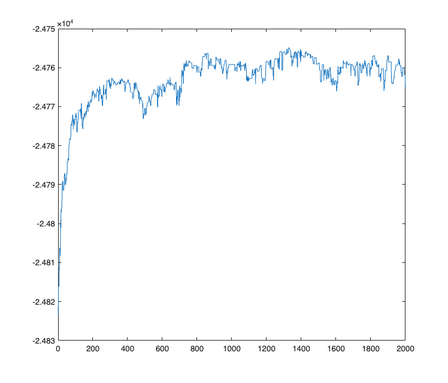
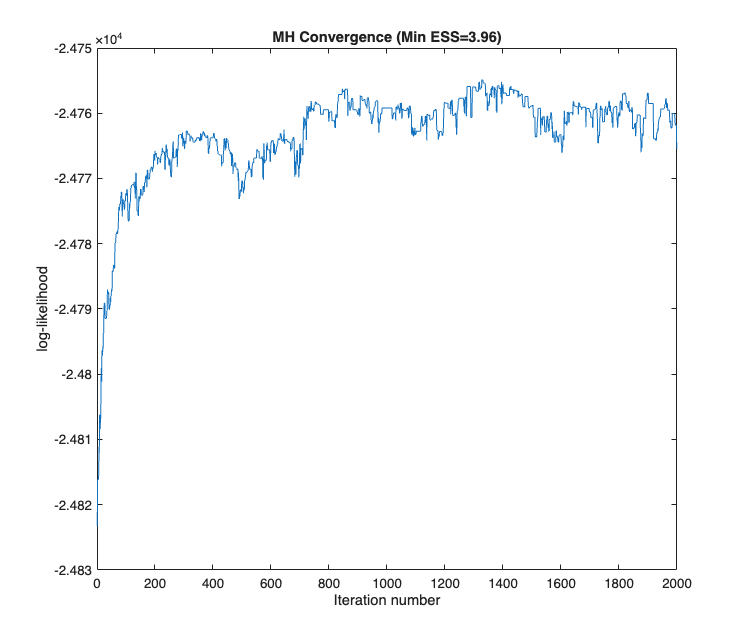
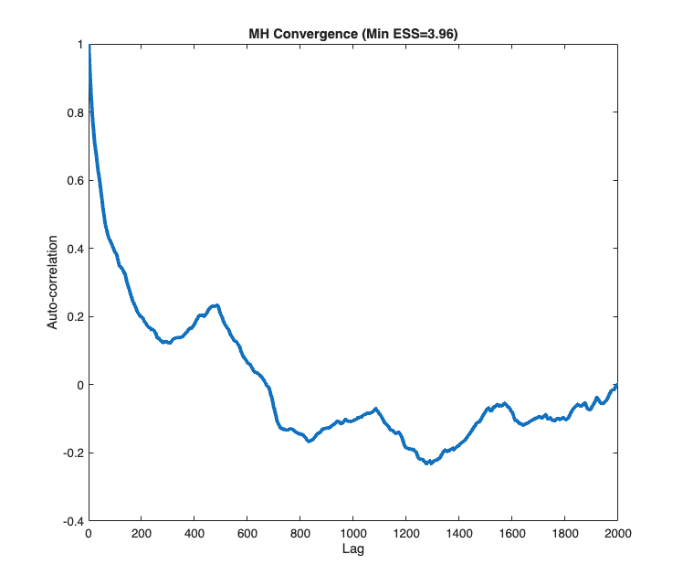
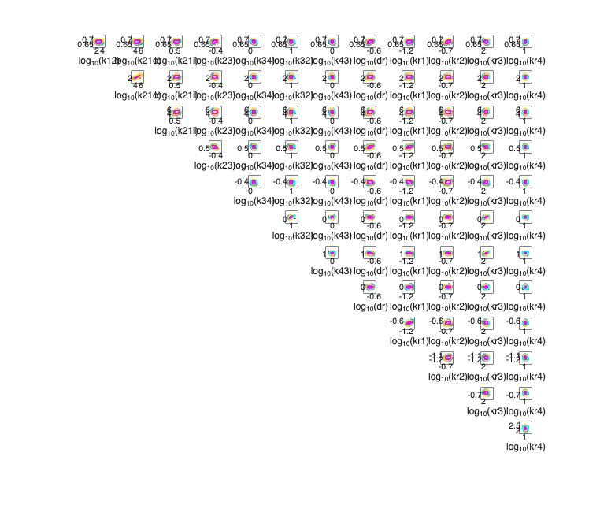
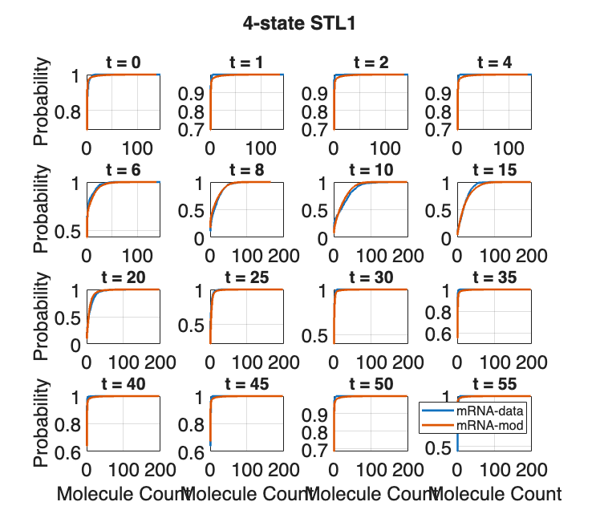
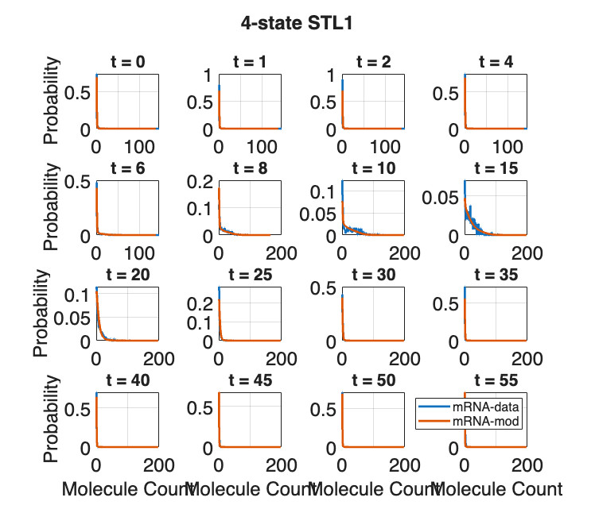
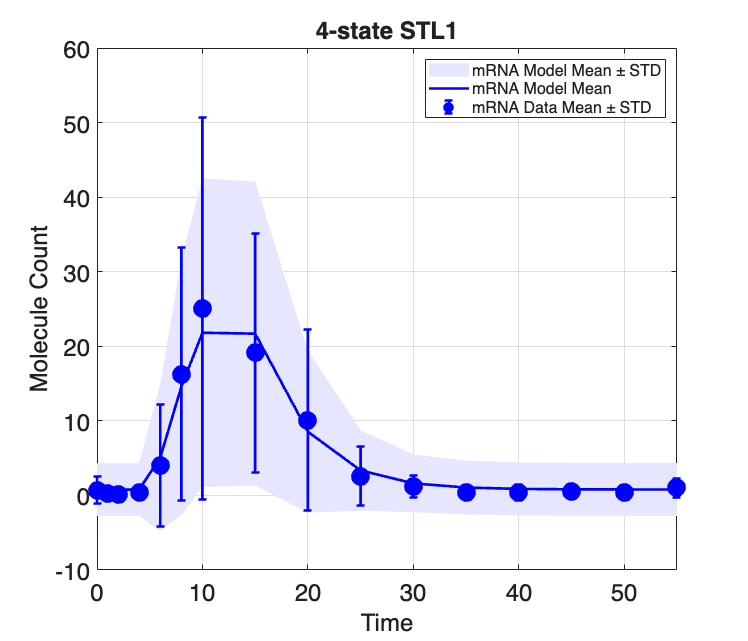
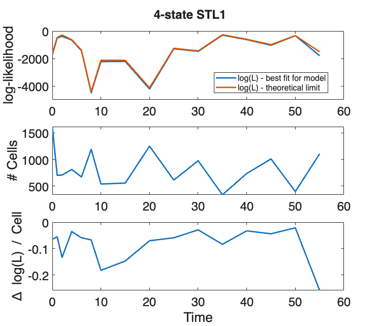

Contents
SSIT/Examples/example_10b_LoadingandFittingData_MH_with_FIM
%%%%%%%%%%%%%%%%%%%%%%%%%%%%%%%%%%%%%%%%%%%%%%%%%%%%%%%%%%%%%%%%%%%%%%%%%
Section 2.3: Loading and fitting time-varying STL1 yeast data
* Uncertainty sampling using the Metropolis-Hastings Algorithm (MHA) * Use Bayesian priors and iterate between computing MLE and MH * Use FIM for Metropolis-Hastings proposal distribution This sometimes provides faster mixing (convergence), although in our simple example, the default proposal distribution (above) is fine.
%%%%%%%%%%%%%%%%%%%%%%%%%%%%%%%%%%%%%%%%%%%%%%%%%%%%%%%%%%%%%%%%%%%%%%%%% % Make a new copy of our 4-state STL1 model: STL1_4state_MH_FIM = STL1_4state_MLE;
Compute FIM, Run Metropolis Hastings
Specify Prior as log-normal distribution with wide uncertainty Prior log-mean:
mu_log10 = [0.5,2,5,3.5,-0.4,1,0.2,0.4,-0.5,-1.3,-0.1,2,0.5]; % Prior log-standard deviation: sig_log10 = 2*ones(1,13); % Prior: STL1_4state_MH_FIM.fittingOptions.logPrior = ... @(x)-sum((log10(x)-mu_log10).^2./(2*sig_log10.^2)); % Choose parameters to search: STL1_4state_MH_FIM.fittingOptions.modelVarsToFit = [1:13]; % Create first parameter guess: STL1_4state_MH_FIM_pars = [STL1_4state_MH_FIM.parameters{:,2}]; % Compute individual FIMs: fimResults = STL1_4state_MH_FIM.computeFIM([],'log'); % Compute total FIM including effect of prior: fimTotal = STL1_4state_MH_FIM.evaluateExperiment(fimResults,... STL1_4state_MH_FIM.dataSet.nCells,diag(sig_log10.^2)); % Select FIM for free parameters: FIMfree = fimTotal{1}([1:13],[1:13]); % Estimate the covariance using CRLB: COVfree = (1/2*(FIMfree + FIMfree'))^(-1); % Define Metropolis-Hasting settings: STL1_4state_MH_FIM.fittingOptions.logPrior = ... @(x)-sum((log10(x)-mu_log10([1:13])).^2./(2*sig_log10([1:13]).^2)); proposalWidthScale = 0.1; STL1_4state_MH_FIM_FIMOptions = ... struct('proposalDistribution',@(x)mvnrnd(x,proposalWidthScale*COVfree),... 'numberOfSamples',2000,'burnin',500,'thin',2); % Run Metropolis Hastings [STL1_4state_MH_FIM_pars,~,STL1_4state_FIM_MHResults] = ... STL1_4state_MH_FIM.maximizeLikelihood([], ... STL1_4state_MH_FIM_FIMOptions, 'MetropolisHastings'); % Store sampled parameters: STL1_4state_MH_FIM.parameters([1:13],2) = ... num2cell(STL1_4state_MH_FIM_pars); % Plot MH samples, FIM: STL1_4state_MH_FIM.plotMHResults(STL1_4state_FIM_MHResults,... FIM=FIMfree, fimScale='log') STL1_4state_MH_FIM.plotFits([], "all", [], {'linewidth',2},... Title='4-state STL1', YLabel='Molecule Count',... LegendLocation='northeast', LegendFontSize=12);
MH sample means and standard deviations (log10 scale):
t0: mean = 0.6767, std = 0.0081
k12: mean = 2.7492, std = 0.5154
k21o: mean = 4.6915, std = 0.5231
k21i: mean = 0.5553, std = 0.0420
k23: mean = -0.4184, std = 0.0169
k34: mean = 0.6438, std = 0.1132
k32: mean = 0.9847, std = 0.0697
k43: mean = -0.0650, std = 0.0540
dr: mean = -0.6411, std = 0.0136
kr1: mean = -1.1518, std = 0.0204
kr2: mean = -0.6193, std = 0.0379
kr3: mean = 2.2187, std = 0.0608
kr4: mean = 1.2048, std = 0.0542








Save models & MH results:
saveNames = unique({'STL1_4state_MH_FIM'
'STL1_4state_MH_FIM_pars'
'fimResults'
'fimTotal'
'FIMfree'
'COVfree'
'STL1_4state_FIM_MHResults'
});
save('example_10b_LoadingandFittingData_MH_with_FIM',saveNames{:})